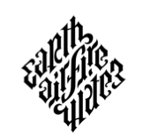

116
Langdon diğerleriyle birlikte San Pietro Bazilikası’ndan çıkarken saat 23.39’du. Gözlerine kör edici bir ışık vuruyordu. Medya ışıkları beyaz mermeri, karlı tundraya düşen güneş ışığı gibi parlatıyordu. Dev sütunların arkasında korunmaya çalışan Langdon gözlerini kısıyordu, ama ışık tüm yönlerden geliyordu. Önündeki kalabalığın üstünde dev video ekranları yükseliyordu.
Aşağıdaki meydana inen ihtişamlı merdivenlerin en üstünde duran Langdon kendini, dünyanın en büyük sahnesinde duran hevessiz bir oyuncu gibi hissediyordu. Parlayan ışıkların arkasında bir yerden alçalan helikopterin sesini ve yüz binlerce kafadan çıkan gürültüyü duydu. Sol taraflarında, bir kardinaller alayı meydana boşalıyordu. Hepsi birden durup merdivenlerde beliren sahneye kederle baktılar.
Chartrand grup merdivenlerden inip helikoptere doğru yaklaşırken, bitkin bir sesle, “Dikkatli olun,” dedi.
Langdon su altında hareket ediyorlarmış gibi hissediyordu. Camerlengo ile masanın ağırlığı yüzünden kolları ağrımıştı. O anın, daha ne kadar alçaltıcı olabileceğini düşündü. Ardından cevabı gördü. İki BBC muhabiri açık meydandan, basının bulunduğu yere doğru koşuyorlardı. Ama kalabalığın gürültüsüyle arkalarını döndüler. Şimdi Glick ve Macri onlara doğru koşmaya başlamışlardı. Macri’nin omzuna kaldırdığı kamerası kayıttaydı. Langdon, işte akbabalar geliyor, diye düşündü.
Chartrand, “Alt!” diye bağırdı. “Geri çekilin!”
Ama muhabirler gelmeye devam etti. Langdon diğer şebekelerin bu canlı BBC çekimini göstermelerinin yine altı saniye süreceğini tahmin etti. Yanılmıştı. İki saniye aldı. Meydandaki tüm medya ekranları, bir tür evrensel bilinçle birbirlerine bağlıymış gibi, geri sayım saatlerini ve Vatikan muhabirlerini göstermeyi bırakarak, aynı görüntüleri vermeye başladılar... Vatikan merdivenlerinde kaydedilmiş sarsıntılı bir görüntü. Şimdi Langdon baktığı her yerde, Camerlengo’nun yaralı vücudunun dört renkli yakın çekimini görüyordu.
Langdon, bu yanlış, diye düşündü. Merdivenlerden aşağı koşup müdahale etmek istedi ama yapamadı. Zaten faydası olmazdı. Kalabalığın gürültüsünden mi yoksa soğuk havanın etkisiyle mi oldu, Langdon asla bilmeyecekti ama o anda akla gelmeyen oldu.
Camerlengo’nun gözleri, kâbustan uyanan bir adam gibi açıldı ve doğrularak oturdu. Bir an için şaşıran Langdon ve diğerleri, ağırlığın yer değiştirmesiyle sendelediler. Masanın ön kısmı aşağı eğildi. Camerlengo kaymaya başlamıştı. Masayı yere indirerek durumu kurtarmaya çalıştılar ama çok geç kalmışlardı. Camerlengo ön taraftan kaydı. Ama inanılmaz şekilde yere düşmedi. Ayakları yere çarpınca, ayağa dikildi. Bir süre şaşkınlık içinde öylece durdu ve sonra kimsenin onu durdurmasına fırsat vermeden atılarak, merdivenlerden aşağı Macri’ye doğru koşmaya başladı.
Langdon, “Hayır,” diye çığlık attı.
Chartrand, Camerlengo’yu yakalamak için ileri fırladı. Ama Camerlengo deliye dönmüş gözlerini açarak ona döndü. “Bırak beni!”
Chartrand geriye doğru sıçramıştı.
Manzara kötüden betere doğru gidiyordu. Camerlengo’nun, Chartrand’ın göğsünün üstüne serdiği yırtık cüppesi yavaşça sıyrılmaya başladı. Langdon bir an için giysinin üstünde duracağını sandı ama kalmadı. Cüppe omuzlarından kayarak beline kadar inmişti.
Kalabalıktan yükselen yutkunma sesi sanki o anda tüm dünyayı dolaşıp tekrar geri geldi. Kameralar çevrildi, flaş ampulleri patladı. Etraftaki video ekranlarına, Camerlengo’nun damgalanmış göğsünün, korkunç ayrıntılarıyla dev görüntüleri yansıdı. Hatta bazı ekranlar görüntüyü dondurup 180 derece çeviriyorlardı.
Illuminati’nin en büyük zaferi.
Langdon ekranlardaki damgaya baktı. Daha önce gördüğü damganın basılmış hali olmasına rağmen, ancak şimdi anlam ifade ediyordu. Mükemmel bir anlam. Mührün korkutucu gücü, Langdon’a tren gibi çarpmıştı.
Oryantasyon. Langdon simgebilimin ilk kuralını unutmuştu. Bir kare ne zaman kare değildir? Ayrıca, plastik mühürler gibi, demir mühürlerin de basıldıkları zamanki hallerine benzemediğini unutmuştu. Tersten yazılırlardı. Langdon damganın negatifine bakmıştı!
Kargaşa artarken, eski bir Illuminati sözü, yeni anlamıyla yankılanıyordu: “Onu görenlerin sadece hayranlık içinde bakabileceği mükemmellikte, eski maddelerden meydana gelen kusursuz bir elmas.”
Langdon artık efsanenin doğru olduğunu biliyordu.
Toprak, Hava, Ateş, Su.
Illuminati Elması.
